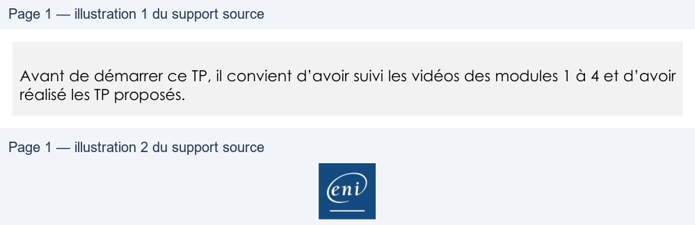

Transcription du document du Drive TSSR. La mise en forme est adaptée au Web ; les compléments IA du portail sont présentés séparément.
Cloud et Microsoft 365
TP 02 du Module 04 – Services complémentaires
Avant de démarrer ce TP, il convient d’avoir suivi les vidéos des modules 1 à 4 et d’avoir
réalisé les TP proposés.
Objectifs
Administrer SharePoint Online
Prérequis
Avoir une connexion internet
Principales tâches à réaliser
•
Créez une bibliothèque de documents en respectant les bonnes pratiques exposées
dans le cours.
o Création de Groupes de domaine locaux dans l’AD / Synchronisation AD
Connect
o Application des permissions adaptées et nettoyage des entrées inutiles
o Limitez le téléchargement hors connexion, les partages externes et invitations
ainsi que les demandes d’accès.
Page 1/1
© ENI – Tous droits réservés
